Next: Three-dimensional Navier-Stokes Calculations Up: Types of analysis Previous: Hydraulic Networks Contents
The turbulent flow in open channels can be approximated by one-dimensional network calculations. For the theoretical background the reader is referred to [17] and expecially [12] (in Dutch). [22] contains information on the solution of transient problems and (transient and steady state) analytical examples. The governing equation is the Bresse equation, which is a special form of the Bernoulli equation. For its derivation we start from Equation (636), which we write down for a flow line near the bottom of the channel in the form:
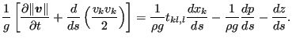 |
(644) |
Assuming:
one arrives at:
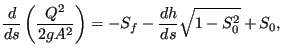 |
(645) |
where (Figure 148) h is the water depth (measured perpendicular to the channel floor), s is the
length along the bottom,
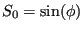 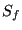 is the angle the
channel floor makes with a horizontal line,
is the angle the
channel floor makes with a horizontal line,  is
the earth acceleration, is the volumetric flow (mass flow divided by the
fluid density) and
is
the earth acceleration, is the volumetric flow (mass flow divided by the
fluid density) and  is the area of the cross section. This also amounts to:
is the area of the cross section. This also amounts to:
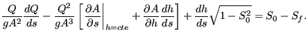 |
(646) |
Assuming no change in flow (dQ/ds=0) and a trapezoidal cross section (for which
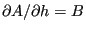 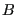
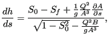 |
(647) |
For several formulas have been proposed. In CalculiX the White-Colebrook and the Manning formula are implemented. The White-Colebrook formula reads
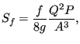 |
(648) |
where  is the friction coefficient determined by Equation
(182), and
is the friction coefficient determined by Equation
(182), and  is the wetted circumference of the cross
section. The Manning formula reads
is the wetted circumference of the cross
section. The Manning formula reads
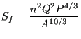 |
(649) |
where  is the Manning coefficient, which has to be determined
experimentally.
is the Manning coefficient, which has to be determined
experimentally.
In CalculiX, the channel cross section has to be trapezoidal (Figure 148). For this geometry the following relations apply:
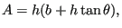 |
(650) |
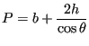 |
(651) |
and
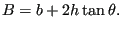 |
(652) |
All geometry parameters are assumed not to change within an
element(allowing a changing geometry within an element leads to complications,
e.g. a non-constant width  may lead to a fall (i.e. a transition from
subcritical flow to supercritical flow) within one and the same element. In
CalculiX. a changing width can be treated in a discontinuous way by using the
Contraction element). Consequently:
may lead to a fall (i.e. a transition from
subcritical flow to supercritical flow) within one and the same element. In
CalculiX. a changing width can be treated in a discontinuous way by using the
Contraction element). Consequently:
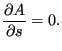 |
(653) |
and one obtains the Bresse equation in the form (for White-Colebrook):
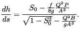 |
(654) |
Recall that in the above formula ,  and
and  are a function of the depth
are a function of the depth
 . The numerator has for positive
. The numerator has for positive  exactly one root, which is called the normal depth. For
this depth there is no change in
exactly one root, which is called the normal depth. For
this depth there is no change in  along the channel. For zero or negative
along the channel. For zero or negative
 there is no root. The denominator
has always exactly one root, called the critical depth. For this depth the slope is
infinite. It is very weakly dependent on
there is no root. The denominator
has always exactly one root, called the critical depth. For this depth the slope is
infinite. It is very weakly dependent on  . Notice that both the normal
depth (if defined) and the critical depth are monotonically increasing
functions of the volumetric fluid flow.
. Notice that both the normal
depth (if defined) and the critical depth are monotonically increasing
functions of the volumetric fluid flow.
Let us for the time being assume that 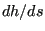 is positive. For
is positive. For  close to zero
both the denominator and numerator are negative, so the slope of
close to zero
both the denominator and numerator are negative, so the slope of  both are positive, which also leads to
a positive slope for . Only for values of
both are positive, which also leads to
a positive slope for . Only for values of  in between the normal and critical
depth the slope is negative. For low values of
in between the normal and critical
depth the slope is negative. For low values of  the normal depth
exceeds the critical depth and the corresopnding channel slope (slope of the
bottom) is called weak. The corresponding water curves are denoted by A1, A2 and A3 depending on whether the curve is above
the normal depth, in between normal depth and critical depth or below the
critical depth, respectively. For high values of
the normal depth
exceeds the critical depth and the corresopnding channel slope (slope of the
bottom) is called weak. The corresponding water curves are denoted by A1, A2 and A3 depending on whether the curve is above
the normal depth, in between normal depth and critical depth or below the
critical depth, respectively. For high values of  the critical
depth exceeds the normal depth and the corresponding channel slope is called
strong. The corresponding water curves are denoted by B1, B2 and B3 depending on whether the curve is above the critical
depth, in between the critical depth and the normal depth or below the normal
depth, respectively. Water curves below the critical depth are governed by
upstream boundary conditions and are called frontwater curves. Water curves
above the critical depth are governed by downstream boundary conditions and
are called backwater curves.
the critical
depth exceeds the normal depth and the corresponding channel slope is called
strong. The corresponding water curves are denoted by B1, B2 and B3 depending on whether the curve is above the critical
depth, in between the critical depth and the normal depth or below the normal
depth, respectively. Water curves below the critical depth are governed by
upstream boundary conditions and are called frontwater curves. Water curves
above the critical depth are governed by downstream boundary conditions and
are called backwater curves.
Channel flow can be supercritical or subcritical. For supercritical flow the
velocity exceeds the propagation speed 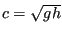 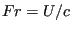 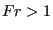 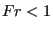 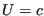 of a wave, which satisfies
of a wave, which satisfies
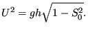 |
(655) |
For frontwater curves  is less than the critical depth, consequently the
velocity must exceed
is less than the critical depth, consequently the
velocity must exceed  (conservation of mass) and is supercritical. For
backwater curves
(conservation of mass) and is supercritical. For
backwater curves  exceeds the critical depth and the velocity is less than
exceeds the critical depth and the velocity is less than
 , the flow is subcritical.
, the flow is subcritical.
A transition from supercritical to subcritical flow is called a hydraulic jump, a transition from subcritical to supercritical flow is a fall. At a jump the following equation is satisfied [17]:
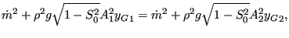 |
(656) |
where 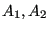 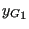 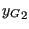 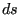 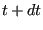 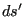 and
and
 , respectively,
, respectively,  is
the fluid density and
is
the fluid density and  is the mass flow. This relationship can be
obtained by applying the conservation of momentum principle to a mass of
infinitesimal width at the jump. The conservation of momentum dictates that
the time rate of change of the momentum must equal all external forces. In
Figure 149 a mass of width
is the mass flow. This relationship can be
obtained by applying the conservation of momentum principle to a mass of
infinitesimal width at the jump. The conservation of momentum dictates that
the time rate of change of the momentum must equal all external forces. In
Figure 149 a mass of width  crossing a jump. At time
crossing a jump. At time
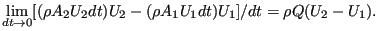 |
(657) |
The forces are the hydrostatic forces on the right and left side of the mass:
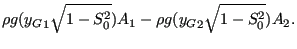 |
(658) |
All other forces such as gravity and wall friction disappear for
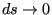 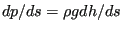 is
discontinuous at the jump. The discrete form of the
Bernoulli equation (638) cannot be used either, since it
is obtained by integrating the differential form and
is
discontinuous at the jump. The discrete form of the
Bernoulli equation (638) cannot be used either, since it
is obtained by integrating the differential form and
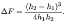 |
(659) |
Since the head loss must
be positive, this also proves that a fall cannot occur in a prismatic channel
(i.e. a channel with constant cross section). Therefore, a fall can only occur at discontinuities in the
channel geometry, e.g. at a discontinuous increase of the channel floor
slope  .
.
This approach opens up an alternative to using the conservation of momentum principle at discontinuities: if one knows the head loss (e.g. by performing experiments) one can apply the discrete form of the Bernoulli equation in the form:
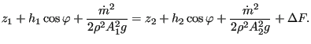 |
(660) |
Defining the specific energy 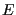
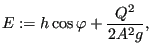 |
(661) |
one can write the above equation as
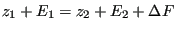 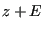 , as shown in Figure
150:
, as shown in Figure
150:
To determine the maximum allowable volumetric flow for a given value of one has to set the first derivative of the above equation to zero, resulting in (recall that ):
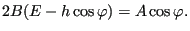 |
(663) |
Substituting this expression in Equation (662) yields:
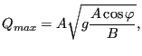 |
(664) |
or
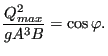 |
(665) |
This corresponds to the denominator of the Bresse equation, i.e. the depth for which the volumetric flow is maximum is the critical depth. This is illustrated in Figure 150. Curves corresponding to lower values of also go through the origin and are completely contained in the curve shown. These curves cannot intersect, since this would mean that the intersection point corresponds to different energy values.
For a volumetric flow lower than the maximal one ( 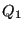 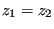 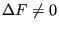 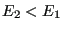
Available boundary conditions for channels are the sluice gate and the weir (upstream conditions) and the infinite reservoir (downstream condition). They are described in Section 6.6. Discontinuous changes within a channel can be described using the contraction, enlargement and step elements.
The elements used in CalculiX for one-dimensional channel networks are regular network elements, in which the unknowns are the fluid depth (in z-direction, i.e. not orthogonal to the channel floor) and the temperature at the end nodes and the mass flow in the middle nodes. The equations at our disposal are the Bresse equation in the middle nodes (conservation of momentum), and the mass and energy conservation (Equations 632 and 641, respectively) at the end nodes.
For channel elements the energy equation is used in its original form:
in which  for the incoming flow is determined at the correct upstream
temperature .
for the incoming flow is determined at the correct upstream
temperature .  is the temperature of the wall. The temperatures in the network are solved for as
soon as the mass flow and fluid depth have been determined in the complete
network. The above equation is applied on an element by element basis starting
at the upstream In/Out elements and going in downstream direction. It can be reformulated as:
is the temperature of the wall. The temperatures in the network are solved for as
soon as the mass flow and fluid depth have been determined in the complete
network. The above equation is applied on an element by element basis starting
at the upstream In/Out elements and going in downstream direction. It can be reformulated as:
| (667) |
This is a slightly nonlinear equation in which is solved node by node in an iterative way. Convection with the wall can be defined using a *FILM card (forced convection), for the heat source *CFLUX is to be used on degree of freedom 0 (or, equivalently, 11).
Radiation to the environment can be included by modifying Equation (666) into:
| (668) |
where  is the representative radiating surface for ,
is the representative radiating surface for ,  is the
emissivity,
is the
emissivity,  is the Stefan-Boltzmann constant and all temperatures
have to be on an absolute scale. The radiating surface can be modeled using
shell elements or solid elements covering the fluid surface. The above
equation is a quartic equation, which can be solved using the conventional
Newton-Raphson technique. Due to the independent processing of the energy equation
after having solved the mass and momentum equation it is assumed that a change
in
temperature does not significantly influence the flow conditions.
is the Stefan-Boltzmann constant and all temperatures
have to be on an absolute scale. The radiating surface can be modeled using
shell elements or solid elements covering the fluid surface. The above
equation is a quartic equation, which can be solved using the conventional
Newton-Raphson technique. Due to the independent processing of the energy equation
after having solved the mass and momentum equation it is assumed that a change
in
temperature does not significantly influence the flow conditions.
Output variables are the mass flow (key MF on the *NODE PRINT or *NODE FILE card), the fluid depth (key PN -- network pressure -- on the *NODE PRINT card and DEPT on the *NODE FILE card) and the total temperature (key NT on the *NODE PRINT card and TT on the *NODE FILE card). These are the primary variables in the network. Internally, in network nodes, components one to three of the structural displacement field are used for the mass flow, the fluid depth and the critical depth, respectively. So their output can also be obtained by requesting U on the *NODE PRINT card. This is the only way to get the critical depth in the .dat file. In the .frd file the critical depth can be obtained by selecting HCRI on the *NODE FILE card. Notice that for liquids the total temperature virtually coincides with the static temperature (cf. previous section; recall that the wave speed in a channel with water depth 1 m is m/s). If a jump occurs in the network, this is reported on the screen listing the element in which the jump takes place and its relative location within the element.